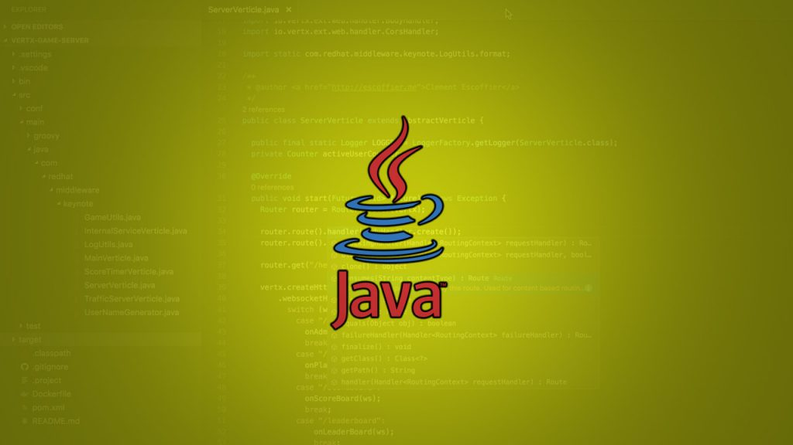

Java Best Practices
October 28,2020 Programming is not just about writing code. It is about writing Clean, Maintainable, Non-Fragile Code and much more. Since Java is a grammatically strong language, if we provide a little care we can write robust code instead of untidy and sluggish code.
In this blog post , we will be dealing with the do's and don'ts along with conventions and best practices in Java, in these three points .
- 1. Use Naming Conventions
- 2. Introduce Parameter Object
- 3. Program to an Interface
1. Use Naming Conventions
Naming plays an important part in making a code readable. If named properly, we can distinguish packages, classes, methods, variables and constants just from their names.
i) Packages :
Packages should be named in small letters. Company uses reversed Internet Domain name to begin their packages name.
examples:
- com.example.mypackage
- com.mysql.jdbc
- org.companyname.projectname
ii) Classes and Interfaces:
Class names should be nouns and first letter of each internal word is capitalized. Interfaces are exactly named as classes.
examples:
- EmployeeService
- DriverManager
- Student
iii) Variables and Methods:
The variables and methods are named using all small letters. In case of multi-word variables and method names, first letter is made lowercase with first letter of each internal word capitalized.
examples:
- double num
- double getSum()
- int productCost
- int getProductCost()
iv) Constants:
Constants are named in all uppercase letters with words separated by underscore("_"). The static final variables are constants.
examples:
- static final int EXIT_ON_CLOSE
- static final double MIN_WIDTH
2. Introduce Parameter Object
Data need to be transferred from one class to another in same or different packages.It is not good to carry related data in unrelated and distributed manner. Instead, data should be wrapped with respective object and object is carried afterwards.
example:
User.java
We are going to carry the data member of User class to UserServiceImpl class which implements UserService interface and would save the user information.
UserServiceImpl.java
Instead of passing individual data member, it is convenient to pass User object.
UserServiceImpl.java
Thus, it is much easier to read and write tests if you pass the whole object. Also, related data will not be distributed while being passed. Introducing Parameter Object is actually a recommended design pattern.
BUT, be careful while passing object as parameter. Any changes made in object inside the method will be reflected in the original object as an object is passed by copying the value of reference, in Java.
3. Program to an Interface :
An interface is a completely "abstract class" with only related abstract methods. It is one of the ways to achieve abstraction. Implementation is the concrete class where the logic is written. Interface is the contract; it species that its implementer class should implement all the abstract methods.
Always Program to an Interface, Not to Implementation.
Here we have Bank interface, which is implemented by NabilBank and PrabhuBank. The implementing banks will give their own implementation to the abstract methods of interface Bank.
Bank.java
NabilBank.java
PrabhuBank.java
RunBank.java
Programming to an interface provides flexibility. In case, we need to add additional functionality to banks we can simply add it to the interface and make the banks to implement it. Furthermore, interfaces also provides the feature of dynamic binding of object, which increases the code reusability and flexibity.
Here, in the RunBank.java , instead of having two different methods for displaying information about NabilBank and PrabhuBank , we have one method which binds to either of the classes depending on whose object is passed in the runtime.
More From This Blog
API : An Intoduction
Posted on: August 14, 2019
API is a regular term used widely in field of web development. But many people don't have any , or have a vague idea about APIs Read more....
Rest API With Spring Boot
Posted on: August 24, 2019
REST, stands for Representational State Transfer, which is an architectural style to develop APIs. REST API is an Read more....
Git : Get Started With
Posted on: September 18, 2019
GIT has been established as a popular and a must-know tool for developers in recent time. Basically, Git is a Read more....
Constructors in C++
Posted on: July 9, 2019
Constructors are the special type of member functions that have same name as that of the class. So, if constructors are Read more....
Mail Sender in Java
Posted on: October 16, 2019
Java provides Mailer APIs for sending and receiving emails via Java Application using any mail servers. In this blog post Read more....
Why Constructors in C++
Posted on: July 14, 2019
Have you ever wondered, why constructors are so important in object oriented languages ? Do you, actually know when Read more....